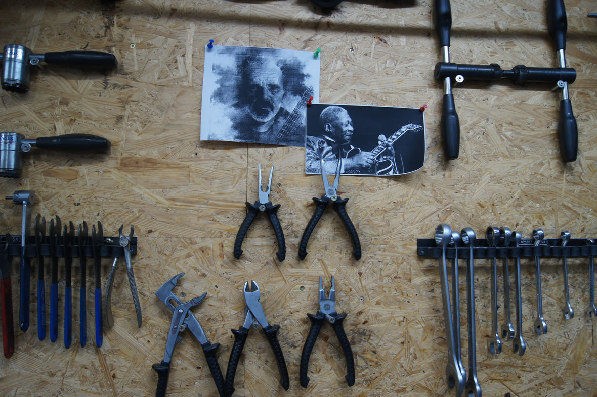

Home |
Produkte |
Über uns |
Kontakt |
Wir sind Mitglied im VSF (Verbund Service & Fahrrad e.V.) und Fördermitglied im ADFC. Der Verbund Service und Fahrrad e. V. ist ein unabhängiger Fachverband der Fahrradbranche, der mehr als 300 Händler, Hersteller und Dienstleister vertritt. Er steht für einen hohen Qualitätsanspruch, Nachhaltigkeit, Fairness und Verlässlichkeit. Der ADFC ist die größte Interessenvertretung für Radfahrer*innen weltweit und hat mehr als 215.000 Mitglieder. Je mehr wir sind, desto stärker spürt die Politik den Druck, auch direkt vor Ort!
Seit 1989 betreibt Michael Schlosser seinen Fahrradshop "Rund ums Rad" in Wallstadt. Er hat ein Faible für ausgefallene Räder und setzt vor allem auf Deutsche Markenqualität. Reparaturen gehören zum Geschäft und sind für den gelernten Maschinenbauer eine Selbstverständlichkeit. Musikalische Helden der 70er und 80er Jahre: J.J.Cale und B.B.King hängen bei Michael Schlosser in der Werkstatt, der selbst gerne zur Bass-Gitarre greift. Seit 15 Jahren spielt er mit seiner Band "Lucky Mushrooms" und sorgt mit Rock der 60er und 70er für gute Stimmung.
Renee Ariane Ortel – 2210413
Kurs INT, Hochschule Mannheim, SS 2022
siehe index
siehe index